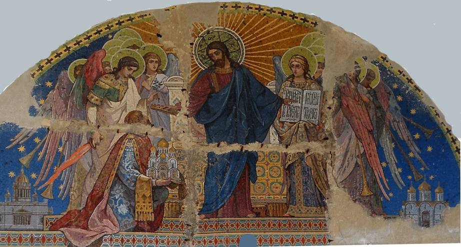

Мозаичная композиция "Спаситель с донатором"

. Размер композиции составляет около 5 м 20 см в длину и около 2 м 60 см в высоту. Выполнена мозаика в форме полукруга. Недостающие фрагменты были заштукатурены. Есть утраты небольшого количества кусочков смальты на мозаичных фрагментах. На композиции видны 25 скоб, фиксирующих фрагменты мозаики на стене собора. Композиция окружена фигурной рамкой в форме полукруга.
На композиции Господь изображен стоящим в лике ангельских сил. Сразу за Господом виден престол. Ближе всех к Христу предстоят архангелы– справа Михаил, а слева Гавриил. В левой руке архангел Михаил держит райскую ветвь, а в правой – огненный меч. В руках архангел Гавриила находится раскрытое Евангелие, на страницах которого на церковно-славянском языке написано: «Вниди в радость Господа твоего. Матф 22,24» . Слева у ног Спасителя на коленях стоит человек в княжеском одеянии. Он преподносит на рушнике в дар Иисусу Христу пятиглавый собор с золочеными куполами. Христос за это, указывая левой рукой на Евангельские слова, правой рукой возлагает на голову принесшего свой дар золотой венец. В левом и правом нижних углах композиции помещены макеты соответственно Петербургского Исаакиевского собора и Московского Успенского собора. Собор, представленный на мозаичной композиции, есть ничто иное, как макет Варшавского собора в честь святого благоверного князя Александра Невского. Собор на этой мозаике изображен с западной стороны. Над тремя центральными входами собора видны контуры мозаичных композиций. Человеком, приносящим его в дар, является никто иной, как Л. Н. Бенуа, автор проекта Варшавского собора. За то, что не закопал в землю, а приумножил от Господа вверенный ему талант, он будет приветствован Богом указанными на мозаике словами и увенчан от Него золотым венцом.
Наверняка символичным является помещение на этой мозаике Исаакиевского и Успенского соборов. По своему архитектурному стилю Варшавский собор подражает Успенскому, а внутри и снаружи многие иконографические композиции выполнены мозаикой, как в Исаакиевском соборе.
По стилю исполнения образы Спасителя, ангелов и приносящего дар - живописные.По кругу композиция украшена орнаментом, ширина которого приблизительно равна 15 см. Орнамент выполнен смальтой золотого, зеленого и красного цвета.